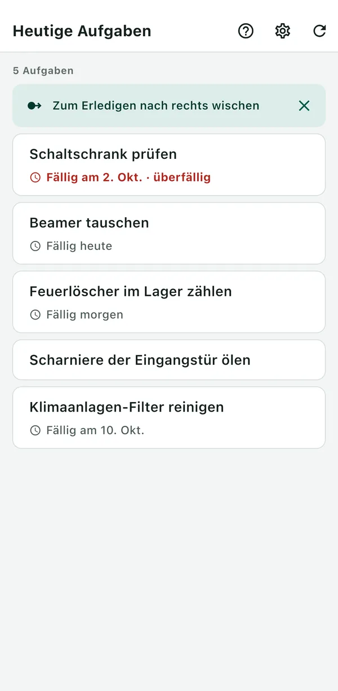
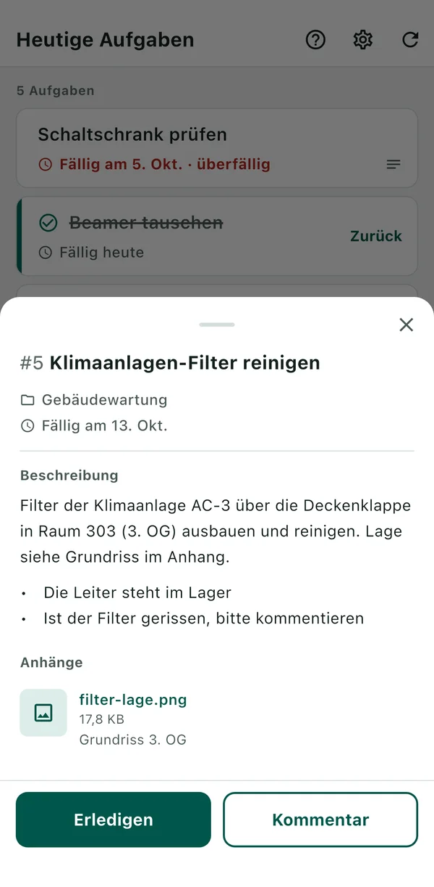

BeatMine for Redmine
Eine App, mit der Sie die Ihnen zugewiesenen Redmine-Aufgaben mit wenigen Handgriffen vom iPhone aus melden. BeatMine ist keine offizielle Redmine-App und steht in keiner Verbindung zu den Redmine-Entwicklern.
- Es werden nur Ihre eigenen, noch offenen Aufgaben angezeigt. Überfällige Aufgaben erscheinen rot.
- Wischen Sie eine Aufgabe nach rechts, um sie zu erledigen. Sie können das sofort rückgängig machen.
- Tippen Sie auf eine Aufgabe, um einen Kommentar zu senden. Er wird in der Redmine-Historie gespeichert.


Was Sie brauchen
- Redmine 6.0, 6.1 oder 7.0.
- HTTPS-Zugriff auf dieses Redmine von diesem Gerät aus.
- Eine in Redmine aktivierte REST-API (eine Einstellung Ihres Redmine-Administrators).
- Ihr API-Schlüssel. Falls Sie ihn nicht zur Hand haben, nutzen Sie „API-Schlüssel in Redmine abrufen“ auf dem Verbindungsbildschirm.
Nicht unterstützte Umgebungen finden Sie unter „Nicht unterstützt“.
Erste Schritte
- Öffnen Sie die App und geben Sie die URL Ihres Redmine ein.
- Tippen Sie auf „API-Schlüssel in Redmine abrufen“. Redmine öffnet sich im Browser. Melden Sie sich an und kopieren Sie den angezeigten API-Schlüssel. Kehren Sie zu BeatMine zurück und tippen Sie auf „Einfügen und verbinden“. Haben Sie den API-Schlüssel bereits, können Sie ihn eingeben und auf „Verbinden“ tippen.
- Ihre Aufgabenliste erscheint.
Wenn etwas nicht klappt
Suchen Sie die Meldung, die auf dem Bildschirm erscheint.
Beim Verbinden
Erscheint „Keine Verbindung zu Redmine möglich.“, prüfen Sie die Ursache. Eine falsche URL oder ein falscher API-Schlüssel wird unter dem jeweiligen Feld angezeigt. Andere Ursachen sehen Sie über „Details“.
| Ursache | Was Sie tun können |
|---|---|
| „Die Redmine-URL ist falsch.“ | Öffnen Sie die URL im Browser des Geräts. Öffnet sie sich nicht, ist die URL vielleicht falsch geschrieben, oder Sie verbinden sich von außen mit einem nur intern erreichbaren Redmine. |
| „Der API-Schlüssel ist falsch.“ | Geben Sie den API-Schlüssel erneut ein. Tippen Sie auf „API-Schlüssel in Redmine abrufen“ und kopieren Sie den angezeigten Schlüssel. Ist Redmine eine weitere Anmeldung (z. B. Basic-Authentifizierung) vorgeschaltet, kann diese App nicht verwendet werden. |
| „Die Redmine-API ist deaktiviert. Bitten Sie Ihren Redmine-Administrator, sie zu aktivieren.“ | Lassen Sie die REST-API in Redmine aktivieren. |
| „Das Zertifikat von Redmine kann nicht überprüft werden.“ | Dieses Gerät kann das Zertifikat Ihres Redmine nicht prüfen. Redmine-Server mit einem privaten Zertifikat (nur innerhalb Ihrer Organisation ausgestellt) werden nicht unterstützt. Die Meldung erscheint auch, wenn die Anmeldung im WLAN noch nicht abgeschlossen ist oder Datum und Uhrzeit des Geräts nicht stimmen. |
Beim Laden, Erledigen oder Kommentieren
| Meldung | Was Sie tun können |
|---|---|
| „Netzwerkfehler“ | Versuchen Sie es dort erneut, wo Sie Empfang haben. Die Meldung erscheint auch, wenn Redmine vorübergehend nicht antwortet. |
| „Von einem anderen Benutzer aktualisiert. Bitte neu laden.“ | Jemand anderes hat die Aufgabe geändert. Laden Sie neu, prüfen Sie den aktuellen Stand und versuchen Sie es dann erneut. |
| „Sie haben keine Berechtigung zum Erledigen.“ (entsprechende Meldung beim Kommentieren und Laden) | Das ist in Ihrem Redmine nicht erlaubt. Wenden Sie sich an Ihren Redmine-Administrator. |
| „Offene Unteraufgaben vorhanden.“ | Erledigen Sie zuerst alle Unteraufgaben. |
| „Durch offene Aufgabe blockiert.“ | Erledigen Sie zuerst die blockierende Aufgabe (in Redmine unter „Zugehörige Tickets“). |
| „Die Änderung war nicht möglich.“ | Redmine hat die Änderung nicht angenommen. Das passiert, wenn zum Erledigen ein Feld ausgefüllt werden muss. Erledigen Sie die Aufgabe dann in Redmine. |
| „Senden konnte nicht bestätigt werden. Bitte neu laden.“ | Die App konnte nicht bestätigen, ob Ihre Änderung in Redmine angekommen ist. Durch Neuladen wird das erneut geprüft.
|
| „Fehler in der App. Bitte neu laden.“ | Hilft Neuladen nicht, wird Ihr Redmine möglicherweise nicht unterstützt (z. B. älter als 6.0). |
Weitere häufige Fragen
- Beim Erledigen wurde ein unerwarteter Status gesetzt (z. B. „Abgewiesen“)
- Die App verwendet den ersten geschlossenen Status, den Sie für diese Aufgabe setzen dürfen, in der Statusreihenfolge von Redmine. Der verwendete Status steht in der Benachrichtigung. Mit „Zurück“ in der erledigten Zeile (oder „Rückgängig“ in der Benachrichtigung) machen Sie das rückgängig. Nach dem Neuladen der Liste oder wenn Redmine das Zurücksetzen des Status nicht erlaubt, ist das nicht mehr möglich. Setzen Sie den Status dann in Redmine zurück. Ändert Ihr Redmine-Administrator die Statusreihenfolge („Erledigt“ vor „Abgewiesen“), wird ein anderer Status gewählt.
- Beim Abrufen des API-Schlüssels wurde mein Passwort abgefragt (Redmine 7.0)
- Redmine fragt einige Zeit nach der Anmeldung erneut nach dem Passwort. Geben Sie es ein, um den API-Schlüssel zu sehen.
- Manche Aufgaben fehlen in der Liste
- Angezeigt werden nur Aufgaben, die Ihnen zugewiesen und nicht geschlossen sind und deren Startdatum nicht in der Zukunft liegt. Aufgaben abgeschlossener Projekte werden nicht angezeigt. Nach Fälligkeit wird nicht gefiltert.
- Bevor Sie Ihr Gerät weitergeben
- „Verbindung löschen“ unter „Einstellungen“ löscht API-Schlüssel, Kommentarentwürfe und Aufzeichnungen unbestätigter Vorgänge vom Gerät.
Nicht unterstützt
Folgendes kann funktionieren, wurde aber nicht getestet.
- Redmine älter als 6.0
- Redmine mit Plugins
- Gehostete Redmine-Dienste (My Redmine, Planio u. a.)
- Private, nur innerhalb Ihrer Organisation ausgestellte Zertifikate
- Redmine vorgeschaltete Authentifizierung (z. B. Basic-Authentifizierung)
- SSO
Kontakt
Fehlerberichte und Feedback senden Sie bitte per E-Mail.
Mit einem GitHub-Konto können Sie auch GitHub Issues nutzen. Issues sind öffentlich.
Geben Sie keine API-Schlüssel, Passwörter, Redmine-URLs, Aufgabeninhalte oder andere vertrauliche Daten an. Mit den folgenden Angaben können wir schneller antworten.
- App-Version (Einstellungen > Allgemein > iPhone-Speicher > BeatMine. Falls nicht auffindbar, lassen Sie sie weg.)
- iPhone-Modell und iOS-Version
- Redmine-Version (falls bekannt)
- Die angezeigte Meldung (z. B. „Netzwerkfehler“) und was Sie gerade getan haben
Aktualisiert am 3. Oktober 2026